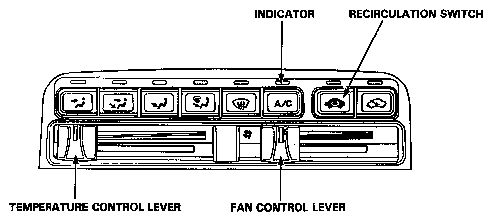

Reading and Clearing Diagnostic Trouble Codes
Self-diagnosis Circuit Check
This air conditioner system has a built-in self-diagnosis feature. To run it, set the controls in the following positions:
^ TEMPERATURE CONTROL LEVER - MAX HOT
^ FAN CONTROL LEVER - OFF
^ RECIRCULATION SWITCH - RECIRCULATE
Turn the ignition switch ON, then alternate the RECIRCULATION SWITCH between FRESH and RECIRCULATE three times within five seconds after turning the ignition switch ON. The A/C indicator light will come on for an instant, and then go off. Wait for at least one minute to see if any problem codes are displayed.
If any problems are found in the component circuits listed below, the A/C indicator light will flash the code, stop, then repeat the code. The number of times the indicator light flashes indicates the problem code. (See code chart below.)
NOTE: If there are two or more problems simultaneously, the indicator light will flash only the lowest number code.
To turn the self-diagnosis function OFF, change any of the following controls:
^ TEMPERATURE CONTROL LEVER - COLD
^ FAN CONTROL SWITCH ON
^ IGNITION SWITCH OFF